| Picture | Name | Description | What it does | Where it's from |
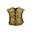 |
Dog Armor | Fur of a dog | Nothing | Worn by dogs |
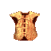 |
Wolf Fur | Fur of a wolf | Nothing | Kill and tan a wolf |
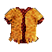 |
Animal Fur | A vest made from the tattered skin of an animal | Nothing | Kill and tan any animal wearing it |
 |
Leather armor | Leather vest | Nothing | Found Everywhere |
 |
Leather scale armor | leather studded vest with metal plate | Nothing | Found everywhere |
 |
Lamellar | Metal scales sewn onto a fabric backing in flexable rows | None | Shop in Maeling as well as m-3, m-4 |
|
Scale armor | Metal scales sewn onto fabric backing in flexible rows | 80/80 Fire/Ice Prot | Many places |
 |
Chain mail | Vest made of linked chain | Nothing | Found everywhere |
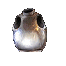 |
Platemail | An iron breastplate and trousers | Nothing | Found everywhere other then n-1 |
 |
Sansquin armor | Icy blue scales of a sanquin | 20 to 40 Ice prot | Kill and tan a sasquin |
|
n-8 Sansquin armor | Icy blue scales of a sanquin | - | Kill and tan a sasquin in n8 |
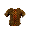 |
Naga armor | Deep brown scales of a naga (Level 12 req) |
20/20 Fire/Ice prot | Kill and tan Naga |
| Mama naga armor | Deep brown scales of a naga (Level 12 req) |
220 Fire/Ice prot | Kill and tan mama naga in n8 | |
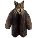 |
Rat fur | Dark brown fur of a large rat | Nothing | Kill and tan a rat or a rabidrat |
| Rat fur | Dark brown fur of a large rat | Psi cutter | - | |
 |
Bear fur | Silky smooth fur of a large black bear | Nothing | Kill and tan a bear |
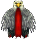 |
Roc feathers | Sparkling feathers of a large griffon | Nothing | Kill and tan a roc |
 |
Griffon armor |
Silver lined feathers of an ancient rock griffon | 200/200 Fire/Ice Prot |
Kill and tan a Griffon |
|
Bruce armor | Silver lined feathers of an ancient rock griffon | 250/250 Fire/Ice prot | Kill and tan Bruce (rare) |
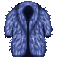 |
Snowbeast fur | Blue-white fur of an enormous snow beast | Psi cutter, Evil aligned |
Kill and tan Snowbeast |
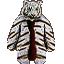 |
Sabertooth Fur | The soft white fur of a snow tiger | Prot from ice | Kill and tan a sabertooth |
 |
Small yeti fur | Snow white fur of a yeti | 50 Fire/Ice prot Hinders Martial artists |
Kill and tan a yeti |
|
Large yeti fur | Snow white fur of a yeti | 100 Fire/Ice prot Psi cutter Hinders Martial artists |
Kill and tan a large yeti from icefloes |
 |
Baskie scales | Red and brown scales of an ancient basilisk | 80/80 Fire/Ice prot | Kill and tan Baskie |
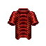 |
Red dragon scales |
A vest made of the crimson scales of a young red dragon (Level 12 req) |
80/80 Fire/Ice Prot |
Kill and Tan Red dragon |
| Fs Red dragon Scales | A vest of intricately designed firestorm Dragon scales, bound together with fire-retarded cloth | 80/80 Fire/Ice. 150 Firestorm Prot |
Kill and Tan Fs Red dragon | |
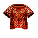 |
Lizard Armor | Fire red scales of a lizard | 100 Fire Prot | Kill Orgelords in M-2 |
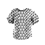 |
Silver Dragon Scales |
Cold grey scales of an ancient Silver Dragon
(Level 12 req) |
100/100 fire/ice Prot 100 Lightning Prot | Kill and Tan Silver dragon |
| Silver Dragon Scales | Cold grey scales of an ancient Silver Dragon (Level 14 req) (Does not tied) |
100/100 fire/ice prot Prot 100 Lightning prot |
Kill and search Bresh | |
 |
Gold Dragon Scales | Sun brilliant scales of an ancient Gold Dragon | 70/70 Fire/Ice Prot 100 Earthcrush Prot | Kill Ncps in N-7 who are wearing |
 |
Black Dragon Scales |
Jet black scales of an ancient Black Dragon
(Level 15 req) |
100/100 Fire/Ice Prot 100 Acid Prot | Kill and tan Black dragon |
|
Improved black dragon scales | 100/100/100/100 Fire/Ice/Acid/Lightning prot |
Quest in alt 2 | |
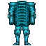 |
Blue full plate | A beautifully crafted set of full plate made from the interlocking cobalt-blue scales of a large lizard |
7/0 good aligned |
From FootSoldiers during an event |
 |
Full Plate |
A set of Fullplate armor made from the crimson scales of a young red dragon
|
250/250 Fire/Ice | Kill Levi, trade Egg for Plate |
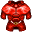 |
Mama Red Dragon Scales |
A vest made of the silky smooth scales of an ancient dragon
(Level 17 req) |
200/200 Fire/Ice Prot 100 Acid Prot |
Kill and tan Mama red dragon |
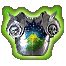 |
Uther Plate |
A finely tooled glowing adamite breastplate with a coat of arms depicting a rising sun over a green grassland
|
+2 100/100 fire/ice Prot |
Kill Uther |
 |
Thief Hag |
A suit of dark leather armour fashioned into the likeness of a bat
(Level 19 req) |
5/5 Infinite Succor. Thief and Ment can use |
Kill Seahag, take robe, trade robe for plate in frore (level 19 to trade) |
 |
Pally Hag |
A suit of white fluted fullplate (Level 20 req) |
0/6 Pally, Fighter, Fighterment can use |
Kill Seahag, take robe, trade robe for plate in frore (level 20 to trade) |
| Thanks to Logic for info on rat fur being a psi cutter. | ||||